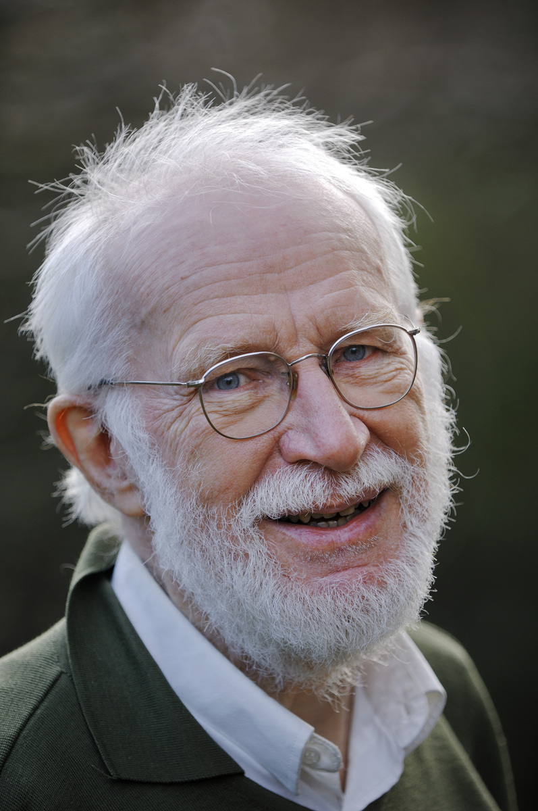

That's him.
Peter Naur was an astronomer from Denmark with a Ph.D. and a Turing Award winner in 2005. He was amazed with computers. He was a member of the ALGOL 60 committee, where he helped define and create the ALGOL language. He also improved BNF.
Previously, we heard of the Backus Normal Form (BNF) for describing context-free languages. Now, we call it the Backus-Naur Form, thus making BNF an improved version of BNF.